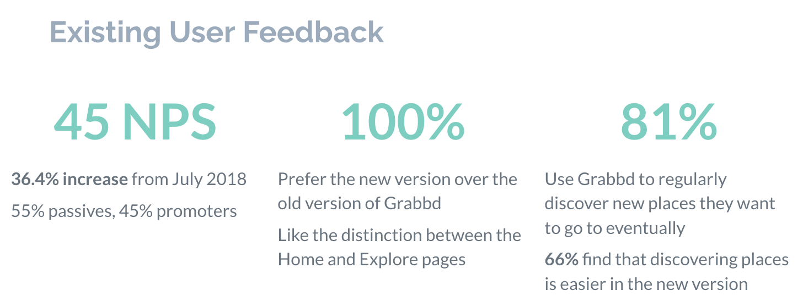
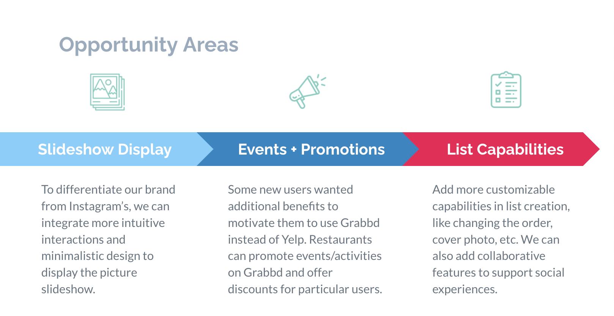

Grabbd
Product Design Internship
ROLE
Product Designer
TIMELINE
May 2020 - Sept 2020
TEAM
Project Manager, Me
SKILLS/TOOLS
User Research, User Testing, Ideation, Prototyping, Figma
PROJECT BRIEF
Expanded functionalities in list creation and revised slideshow display.
Product Design Internship
ROLE
Product Designer
TIMELINE
May 2020 - Sept 2020
TEAM
Project Manager, Me
SKILLS/TOOLS
User Research, User Testing, Ideation, Prototyping, Figma
OVERVIEW
I didn't know what to expect going into my first product design internship at a startup. With Grabbd, a social travel app, I had the incredible opportunity to absorb the bustling startup culture during their exciting app relaunch. As the only product design intern on the team, I took full ownership of user testing and high-fidelity design experimentation. Since I wore many hats, I even had the chance to practice my graphic design skills by designing Grabbd merch and launched a brand new college ambassador program to expand our social media reach!
The relaunch of the app was the biggest design change that Grabbd had ever seen, and we wanted to gain the feedback from both new users (who had ever seen the app before) and existing users.
Goals:
Methodology:
After collecting quantiative and qualitative data from user testing, I categorized the findings and pain points for existing users and new users:
Pain Points:
Pain Points:
After drawing trends and insights to identify pain points, I translated them into a set of opportunity areas.
Oppurtunity areas as presented to Grabbd investors and stakeholders.
IDEATION
Since activity-focused events and promotions were already in the works for the next beta version, I decided to focus on two opportunity areas: slideshow display and list capabilities.
Allow users to collaborate on lists to support Grabbd's social experience.
Users can follow lists to save them for reference.
Left and right arrows to better signify the tap-through story slideshow interaction.
After sketching some low-fidelity screens, I created high-fidelity explorations while keeping the visuals consistent with the brand identity. Unfortunately I can't get into any more detail about the work that I did, since it's under NDA. If you'd like to learn more, please feel free to email me at ch746@cornell.edu!
REFLECTION